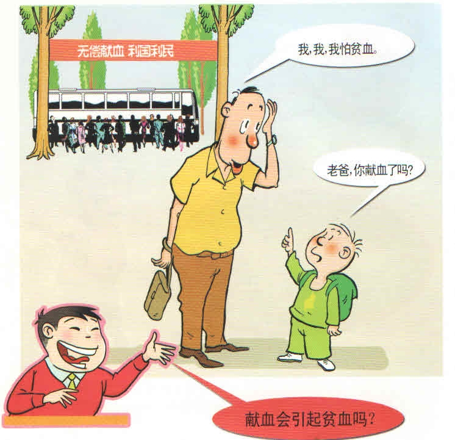
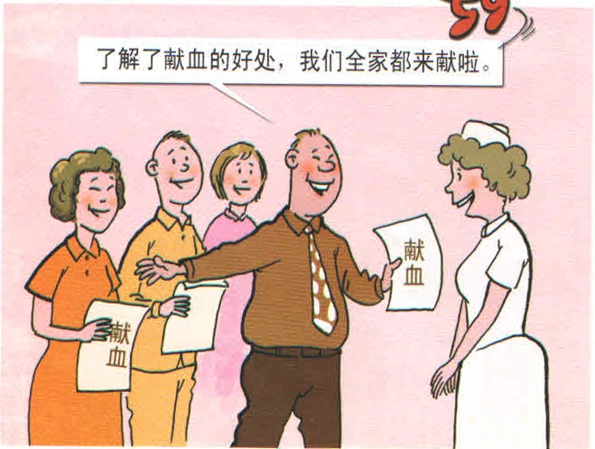
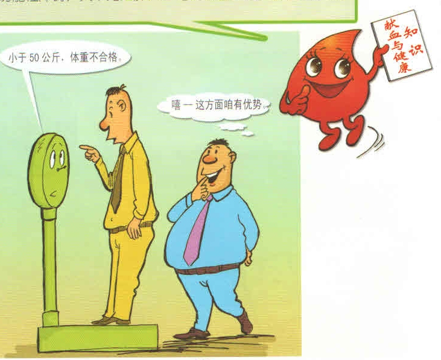
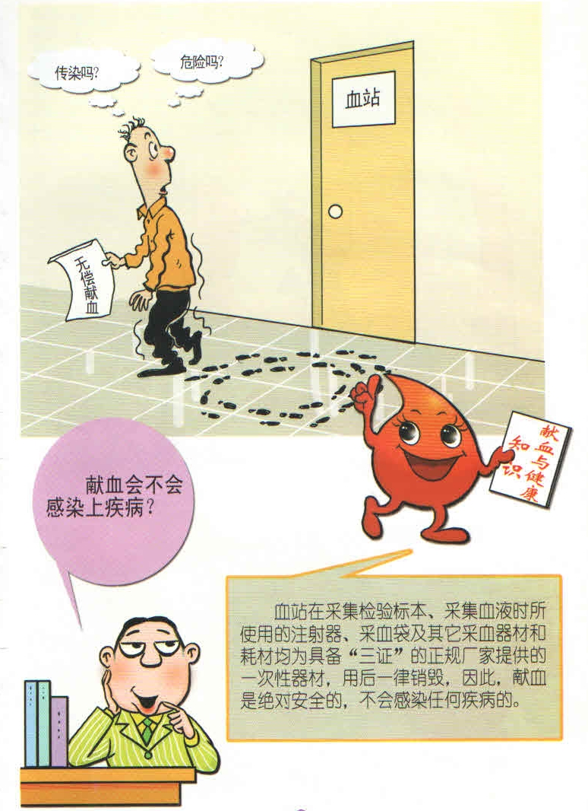
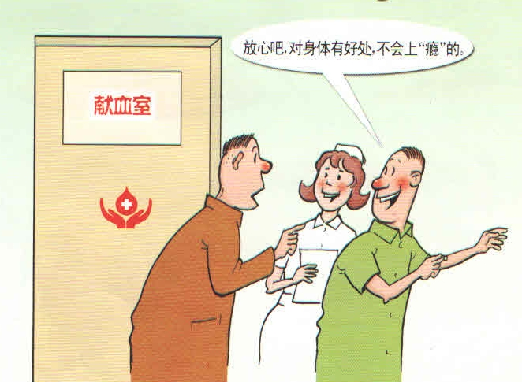

献血小常识
1） 献血影响身体健康吗？
不会的啦！从血液生理学角度看：献血200毫升是个什么概念？人体内的血液总量约占体重的8%，一般成人的血液总量为4000－5000毫升，而一次献血200毫升仅占总血量的1/20－1/25;在临床医学实践中，一般对失血量在600毫升以下的都不主张输血，可见献血200毫升决不会影响健康。
人体内的血液并不都参与血液循环，有20－25%的血液贮存在脾、肝、肺、皮肤等“贮血库”内，脾脏是人体中最大的“贮血库”，可以贮存人体总血量20%的血液。当人体血循环需要血液时，脾脏等会连续不断地释放血液进入血管，参与血循环。献血200毫升不影响血液循环，怎么会影响健康呢？ 人体血液成份的吐故纳新活动十分活跃，人体内每天约有1/120的红细胞（即20亿个红细胞）衰老、死亡，白细胞的平均寿命约7－14天，血小板的寿命就更短，约7－9天。再说，人体骨髓有强大的代偿功能，在一定的条件激发下，骨髓造血功能可增加到正常的6－8倍，一个健康人每天生成红细胞约 2000亿个，血小板 1200亿个，即每个健康成人每年新生的血细胞相当于人体血细胞的总量。献血200毫升后人体很快就会得到补充，决不会影响健康.
2） 献血有好处吗？
当然啦！ 大量科学研究证明献血有益健康。
一、可预防、缓解高粘血症
科学家们运用血液流变学与血液动力学对血液与献血的关系作了研究，发现献血可使血液粘稠度明显降低，加快血液流速，脑血流量提高，从而达到缓解或预防高粘血症，使人感到身体轻松、头脑清醒、精力充沛。
二、可预防、降低心脑血管病的发生
芬兰和美国心血管病研究小组的研究都表明，在3年中，献血者（男性）患心血管病的危险仅为未献血者的 1/2。
三、男子献血可减少癌症的发生率
《国际癌症》杂志曾报道，体内的铁含量超过正常值的10%，罹患癌症的机率就提高，所以适量献血可以预防癌症。该文还提到，女性因月经周期失血损失了一定量的铁质，故未发现女性的铁含量与癌症发生有明显关系。
四、可促进、改善心理健康
大量研究表明，健康的情绪可通过神经、体液、内分泌系统沟通大脑及其他组织与器官，使其处于良好的状态，有益于人体免疫力的增强、抵抗力的提高。而献血是救人一命的高尚品行，在助人为乐、与人为善的同时，也使自己的精神得到净化，心灵得到慰藉，工作与生活更加充实。做好事者以德施善，实际上在帮助别人的同时也帮助了自己，这是健康长寿的重要要素。
五、可延年益寿
国外也曾有学者进行对照研究，结果显示：献血组平均寿命为70.1岁，高于未献血组的平均 67.5岁；献血组的存活率为67%，高于未献血组的40%； 献血组的死亡率为33%，低于未献血组的60%。可见，献血真的有益身体健康！
3）献血体格检查包括哪些内容？
为了保证献血者的健康，《供血者健康检查标准》中规定献血者必须做下列体格检查：
1．核对年龄：适合献血的年龄是18～55周岁。
2．体重：男性不低于50千克（公斤），女性不低于45千克（公斤）
3. 血压：收缩压12～20千帕（90～150mmHg）；舒张压8～12千帕（60～90mmHg），脉压差大于 4千帕（30mmHg）。
4. 脉搏：每分钟60～100次，高度耐力的运动员每分钟50～l00次。
5．体温正常。
6．发育正常，营养中等以上。
7．皮肤无黄染，无创面感染，无大面积皮肤病，浅表淋巴结无明显肿大。
8．五官无严重疾病，巩膜无黄染，甲状腺不肿大。
9．四肢无严重残疾，关节无红肿及功能障碍。
10．胸部；心肺正常。
11．腹部: 正常，无肿块，无压痛，肝脾不肿大。
4）献血者有哪些权利应受保护？
⒈凡无偿献血者有受表彰和奖励的权利。
⒉献血者人格不受侮辱，有保护个人隐私的权力。
⒊献血者参加献血可享受免费体检、化验的特遇。
5）一名健康的公民一生可以献多少血？
按照《中华人民共和国献血法》的规定，献血年龄为18－55周岁，两次献血间隔为六个月以上，每次献血量为200－400毫升。如果一名符合献血标准的健康人按每六个月献血一次，每次献血400毫升计算，那么，一个人一生可献血74次，累计献血量3万毫升。
6）如何参加献血？
您可以参加由单位（包括街道、乡村、学校）组织的献血；也可自行到辖区献血办公室登记献血,或者自行到血站或流动采血车上献血,注意在献血前要进行体格检查和如实填写健康咨询表哦！
7）献血应遵守哪些规定？
1、您只能在本地区一个血站定点献血，每次献血不得超过400毫升，献血间隔期至少6个月以上。不能跨地区跨省市有偿献血，不能四处流动有偿献血。
2、您如果不符合《献血者健康检查标准》将不能参加献血，更不能冒名顶替献血，凡违章献血，造成受血者健康损害者，应承担经济和法律责任。
8）献血会不会感染上疾病？
不会啦！血站在采集检验标本、采集血液时，所使用的注射器、采血袋及其它采血器材和耗材均为具备“三证”的正规厂家提供的一次性器材，用后一律销毁，因此，献血是绝对安全的，不会感染任何疾病的。
9）献血会不会上“瘾”？
不会啦！献血200-400毫升，可以刺激骨髓加快血细胞的生成，在没有献血的情况下，血细胞的生成会象平时一样，新生、衰老、死亡，但总是维持相对平衡的，不会造成上“瘾”。
10）亚洲各国献血情况对比？
我国《献血法》对上述各项的规定，都低于（或宽松于）国际上的发达国家甚至亚洲地区。
献血年龄：我国规定18－55周岁（男、女）；香港特区规定16岁以上，只有年龄下限，而无年龄上限；日本规定18－69岁；韩国规定16－65岁；台湾地区规定17－65岁。
一次献血量：我国规定为一次献血200毫升，最多不超过400毫升；韩国为320－400毫升；香港特区为300－430毫升；台湾地区为250－500毫升；尼泊尔为250－500毫升。
两次献血间隔时间：我国规定不低于六个月；而日本、韩国、香港特区、台湾地区都为3个月。国外曾报道一献血者在一年中10次献血，可见献血无损健康。